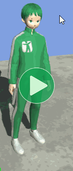
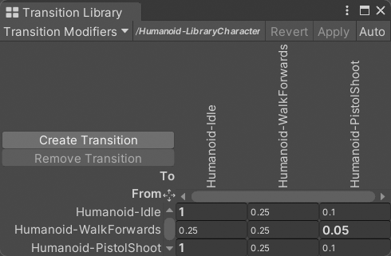
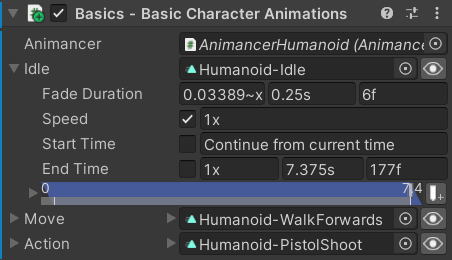
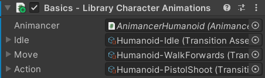
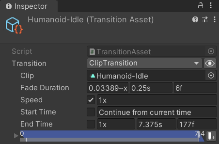
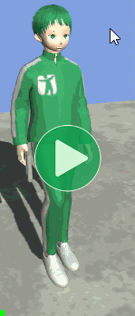
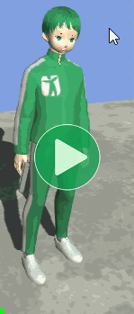
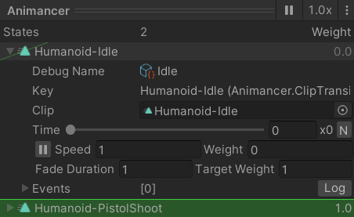
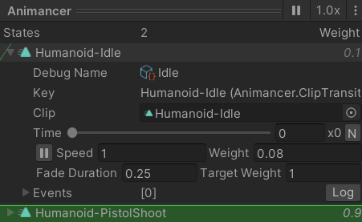

Location: Samples/01 Basics/06 Library Character
Recommended After: Basic Character
Learning Outcomes: in this sample you will learn:
How to use Transition Assets.
How to use Transition Libraries.
Summary
This sample demonstrates the same behaviour as Basic Character except that its animations are set up in Transition Assets which are modified by a Transition Library.
Note how the video shows a fast blend into the Shoot animation and a slow blend back to Idle but not as slow when blending back to Walk.

- A Transition Asset is simply an asset that contains a Transition.
- A Transition Library can modify the Fade Duration of a transition based on the animation that was previously playing. For example, in the above image:
- The small numbers in the Shoot column show its default fade duration of
0.1. - The bold
0.05where the Walk row intersects the Shoot column indicates that it has a modified value. - So if the character was playing Walk and is told to Shoot, it will take
0.05seconds instead of the default0.1. - The script playing Shoot doesn't need to know that the library is present, the modifier is applied automatically.
- The small numbers in the Shoot column show its default fade duration of
- The Transition Libraries page explains explains how to create and edit them.
Overview
The code structure is similar to the Basic Character sample, except that the inline Transitions are replaced by Transition Assets and the AnimancerComponent references a Transition Library to modify them.
{kind=link}
LibraryCharacterAnimations is mostly the same as BasicCharacterAnimations from the Basic Character sample except that it uses the Transition Assets:
using Animancer;
using UnityEngine;
public class LibraryCharacterAnimations : MonoBehaviour
{
[SerializeField] private AnimancerComponent _Animancer;
[SerializeField] private TransitionAsset _Idle;
[SerializeField] private TransitionAsset _Move;
[SerializeField] private TransitionAsset _Action;
private State _CurrentState;
private enum State
{
NotActing,
Acting,
}
protected virtual void Update()
{
switch (_CurrentState)
{
case State.NotActing:
UpdateMovement();
UpdateAction();
break;
case State.Acting:
UpdateAction();
break;
}
}
private void UpdateMovement()
{
_CurrentState = State.NotActing;
float forward = SampleInput.WASD.y;
if (forward > 0)
{
_Animancer.Play(_Move);
}
else
{
_Animancer.Play(_Idle);
}
}
private void UpdateAction()
{
if (SampleInput.LeftMouseUp)
{
_CurrentState = State.Acting;
AnimancerState state = _Animancer.Play(_Action);
state.Events(this).OnEnd ??= UpdateMovement;
}
}
}
Note how that script doesn't reference the Transition Library, it's only referenced by the AnimancerComponent. The script has "Library" in its name because it's part of this sample, but it simply references the Transition Assets and plays them without knowing that a library is modifying them. The library is an art asset for modifying the appearance of the transitions without affecting the code logic.
Serialized Fields
The Serialized Fields now use Transition Assets instead of inline Transitions.
| BasicCharacterAnimations | LibraryCharacterAnimations |
|---|---|
|
|
|  |
 The Inspector fields reference the assets.  The assets contain the actual transition data. |
Events
BasicCharacterAnimations fromn the Basic Character sample used inline Transitions which meant that even if there were multiple different characters or multiple instances of the same character using the same script, they would all have their own copy of the transition data.
But the Transition Assets referenced by LibraryCharacterAnimations could potentially be referenced by multiple characters so having them each assign their own events to the transition would cause them to conflict with each other.
Instead, we now assign the End Event to the AnimancerState after playing the transition so that each character's state will only contain events for that character:
| BasicCharacterAnimations | LibraryCharacterAnimations |
|---|---|
|
|
The End Events page explains that syntax in detail.
Fading from Shoot to Idle
The Summary already explained how the library modifies the Walk -> Shoot combination, but it also has two other modifiers: Idle -> Idle and Shoot -> Idle.
| Shoot -> Walk | Shoot -> Idle |
|---|---|
Default 0.25 seconds fade. |
Modified 1 second fade. |
|  |  |
The Idle -> Idle modifier is never actually used, but it's necessary for Shoot -> Idle to work due to the way the script is telling its animations to play every frame:
- If the character is playing Shoot and the script tells it to play Idle, it will use the
1secondFade Durationdefined in the Shoot -> Idle modifier.

- But then, on the next frame it's playing Idle (which has barely started fading in) and the
UpdateMovementmethod tells it to play Idle again, so now it's trying to play Idle -> Idle. - If Animancer is fading towards a state and you tell it to fade towards that state again (without
FadeMode.FromStart) then it will only use the new fade duration if it's shorter than the fade that was already in progress. - That means if Idle -> Idle didn't have a modifier, it would default to the
0.25defined in the Idle Transition Asset, which is shorter than the time left so it would use the new duration and we would never get to see the1second fade.

- So by giving Idle -> Idle the same
1modifier as Shoot -> Idle, we ensure that it's never shorter so it doesn't replace other fades. - This is only an issue because the script is telling the Idle or Move animation to play every frame. It wouldn't happen if the script only played the animations when its
_CurrentStateactually changed.
Naming
A quick note about naming conventions:
- You may have noticed that the script uses generic names for its fields (
_Idle,_Move, and_Action) because it doesn't have any logic specific to a particular action. It could be used on a snake with a Slither animation for_Moveand Hiss for its_Action. - However, the Transition Assets have specific names matching their animations (Humanoid-Idle, Humanoid-WalkForwards, and Humanoid-PistolShoot) because they aren't generic, they will play those specific animations.
What Next?
That's the last of the Basics samples. Hopefully, by now you have some idea of how you could start using Animancer in your own projects, but the Help page lists various options for contacting the developer if you have any questions or suggestions. There are also many more samples covering the more advanced features of Animancer and ways you can use it.
In particular, the Characters sample again re-implements the same logic, this time using Animancer's Finite State Machine system. Relatively simple behaviours can be easily implemented in a single script like in this sample. But in more complex situations, spending some extra time early on to properly structure your code will often save a lot of time later on when you need to expand it, change it, and debug issues.